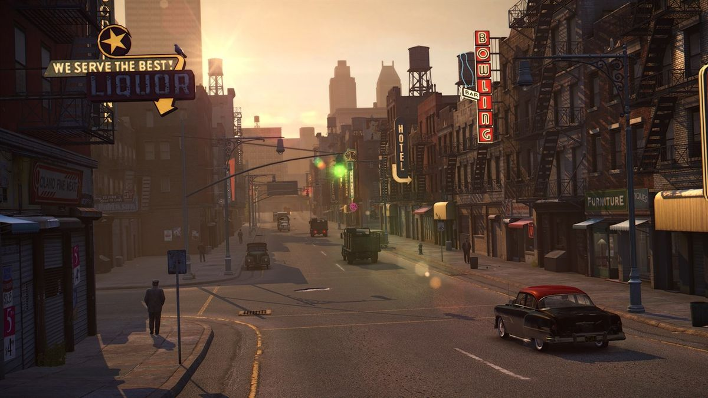
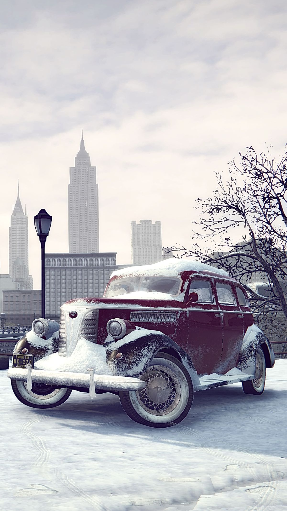

O hře a atmosféře

Český klenot herní historie
Mafia II vyšla v roce 2010 a navázala na legendární první díl. Vývojáři z Brna a Prahy vytvořili fiktivní americké velkoměsto Empire Bay, inspirované New Yorkem, Chicagem a San Franciscem.
Hra vyniká filmovým vyprávěním, dobovou hudbou z 40. a 50. let, realistickým jízdním modelem a nezapomenutelným českým dabingem v čele s Martinem Trnavským a Vlastimilem Zavřelem.

Základní fakta
- Vývojář: 2K Czech
- Rok vydání: 2010
- Hlavní hrdina: Vito Scaletta
- Město: Empire Bay (rozloha cca 26 km²)
- Herní engine: Illusion Engine
Kultovní hlášky ze hry
Klikni na tlačítko a připomeň si legendární české hlášky z Empire Bay:
„Víš, co se říká o chlapovi, co tahá nůž do přestřelky...“ — Joe Barbaro